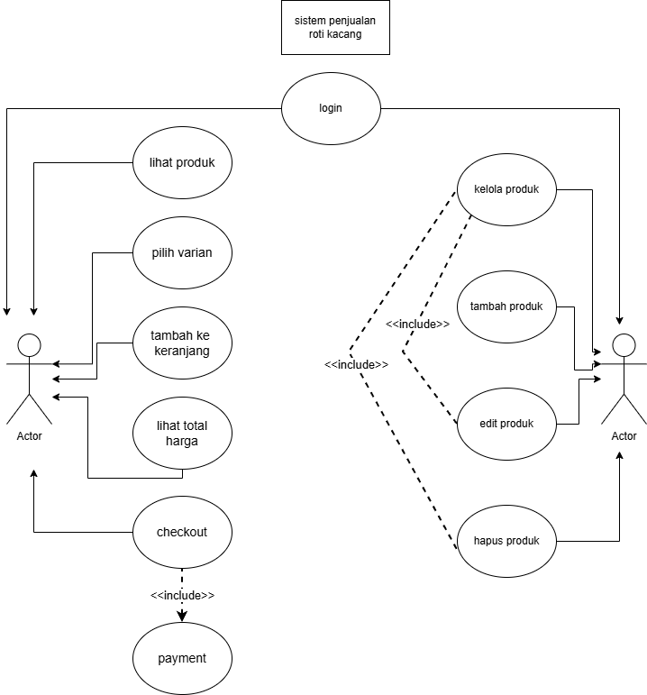

Deskripsi Sistem
Sistem penjualan roti kacang berbasis web ini dirancang untuk memudahkan pelanggan dalam melakukan pembelian secara online. Melalui sistem ini, pengguna dapat melihat berbagai varian produk, menambahkan ke keranjang, serta melakukan proses checkout dan pembayaran secara sederhana.
Sistem juga dilengkapi dengan fitur perhitungan total harga secara otomatis, sehingga membantu pengguna dalam mengetahui jumlah pembayaran yang harus dilakukan. Selain itu, terdapat peran admin yang bertugas mengelola data produk agar tetap terorganisir.
Secara keseluruhan, sistem ini memberikan gambaran dasar alur transaksi e-commerce yang terstruktur dan mudah digunakan.
Aktor
- Pelanggan → melakukan login, memilih produk, dan melakukan pembelian
- Admin → mengelola data produk yang tersedia
Aktor dalam sistem ini dibagi menjadi dua peran utama, yaitu pelanggan sebagai pengguna utama sistem dan admin sebagai pengelola sistem.
Use Case
👤 User (Pelanggan)
- Login ke sistem
- Melihat daftar produk
- Memilih varian roti
- Menambahkan ke keranjang
- Melihat total harga
- Melakukan checkout
- Melakukan pembayaran
🛠️ Admin
- Login ke sistem
- Menambah produk
- Mengedit produk
- Menghapus produk
- Mengelola informasi produk
Use case dibagi menjadi dua bagian utama, yaitu aktivitas user dalam proses pembelian dan aktivitas admin dalam mengelola produk.
Relasi
Pelanggan memiliki hubungan langsung dengan seluruh proses transaksi dalam sistem, mulai dari login hingga pembayaran. Setiap aktivitas yang dilakukan pelanggan merupakan bagian dari alur utama sistem.
Admin memiliki relasi terhadap pengelolaan produk, yang secara tidak langsung mempengaruhi pengalaman pengguna dalam menggunakan sistem.
Diagram UML
Berikut merupakan diagram use case yang dibuat menggunakan draw.io sebagai representasi visual dari sistem:
